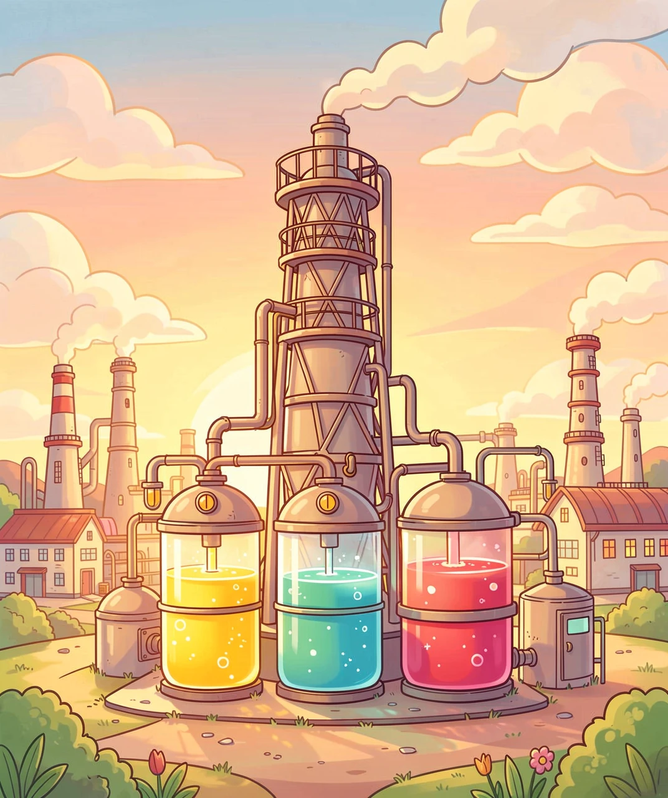
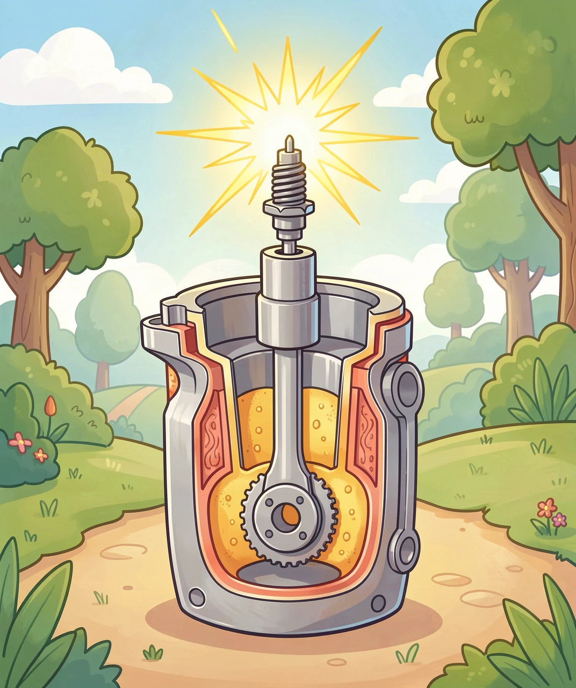
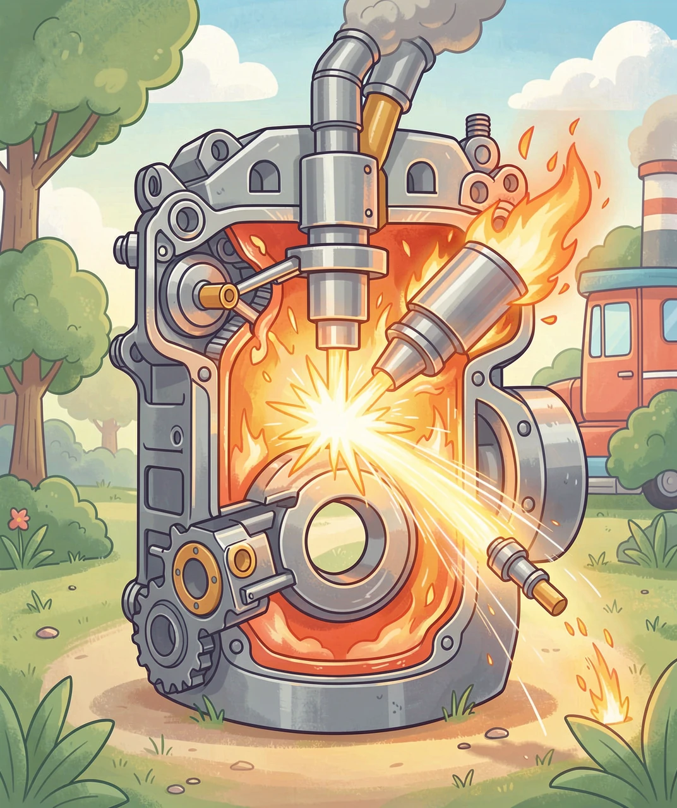
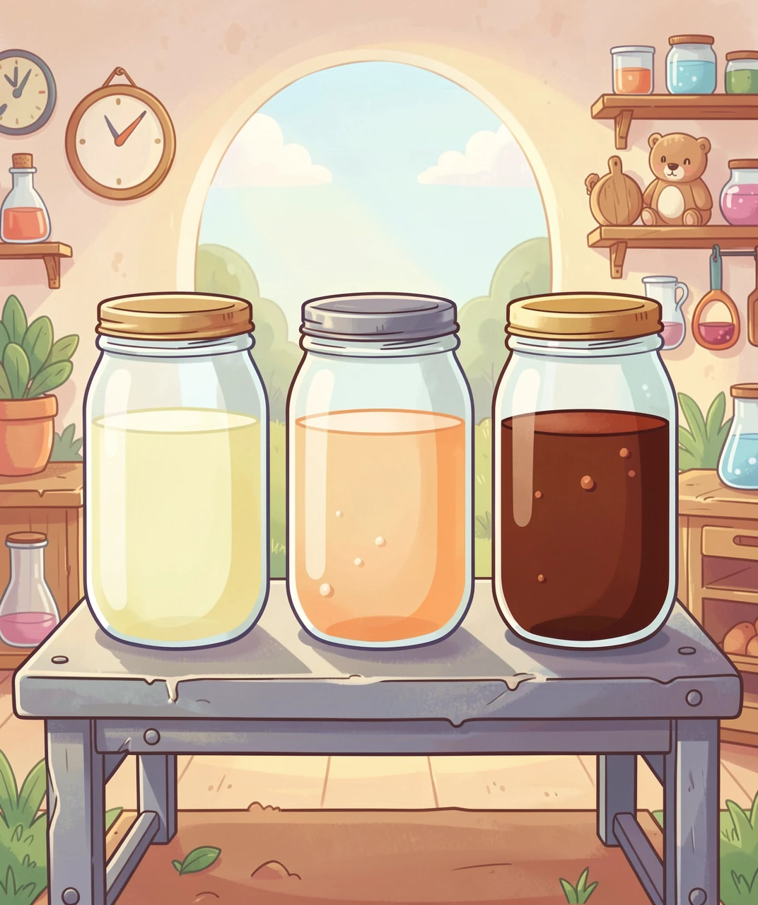

三兄弟为什么各烧各的？一个关于「点着火」的故事
汽车烧汽油，卡车烧柴油，飞机烧煤油。可是你知道吗？这三种油，全都来自同一桶黑乎乎的原油。那它们到底是怎么被分开的？
原油里混着一大堆"碳链"长短不一的分子。碳链就是一串碳原子手拉手连成的小链条，有的只有几个碳，有的十几二十个。科学家发现一个规律：链越短，分子越轻、越容易变成气体、沸点越低；链越长，分子越重、越黏、沸点越高。为什么？因为长链分子之间"抱"得更紧，要更大的力气（更高的温度）才能把它们拉开变成气体。
炼油厂就是利用这一点，把原油慢慢加热，按沸点从低到高，一层层"接"出来：最先跑出来的是最轻的汽油，中间是煤油，再往后是更重更黏的柴油。三兄弟就这样被分开了。

先想一个最根本的问题：燃烧到底需要什么？答案是三样东西：燃料的蒸气 + 氧气 + 达到着火的温度。少一样都不行——所以是气体在烧，不是液体在烧。
汽油最大的优点是特别容易挥发，一进气缸就和空气混得匀匀的，一点就着。可奇怪的是，汽油机明明可以把混合气压缩，却偏不让它自己着，非要用火花塞在某一瞬间"啪"地打一个电火花。为什么？
因为汽油有个脾气：自燃温度很高。也就是说，你得压得很狠、温度很高它才肯自己着火——而这恰恰是我们想要的。如果混合气在火花塞点火之前就自己炸了，这种不受控制的爆炸叫爆震，会"哐哐"地震坏发动机。所以汽油机的做法是：压好混合气，然后在最恰当的一瞬间点火，让火焰从火花处均匀向外推进——这是一场被精确控制的燃烧。
衡量汽油"抗爆震"能力的尺子叫辛烷值，也就是加油站的 92、95、98。数字越高，越不容易提前自爆，发动机就能把压缩比做得更高、效率更高、更有劲。那是不是标号越高越好？不是。发动机的压缩比是出厂定好的，按说明书加就行；给一台只需要 92 的车硬加 98，它也不会凭空多出力。

柴油机很特别：它没有火花塞。它点着火靠的是"用力压"。
追问一句：为什么用力压空气，空气就会变热？因为你压缩气体，等于对气体做功，你花的力气变成了气体的内能，温度就蹭蹭往上涨。柴油机的压缩比大约是 20:1（汽油机只有 10:1 左右），这么一压，气缸里的空气温度能飙到 500～700℃，比柴油自己着起来的温度还高。
这时候把柴油喷成细雾喷进去，它立刻就自己烧起来了。为什么柴油行、汽油不行？因为柴油的自燃点低——它的分子链条长，在高温下比汽油容易自己着火。衡量这一点的尺子叫十六烷值，意思正好和辛烷值相反：数字越高，越容易自己着。
那压燃有什么好处？第一，压缩比高 = 效率更高，同样一箱油跑得更远；第二，柴油更"稠"，同样一升装的能量更多；第三，它不怕爆震，发动机可以做得很粗壮，力气（扭矩）特别大。所以卡车、公交车、轮船、拖拉机都爱用它。代价是：更重、更吵、冷天更难启动（要靠"预热塞"先把气缸烤热），燃烧不好时还容易冒黑烟。

飞机烧的是航空煤油。为什么不用劲儿更大的汽油，或者更有劲的柴油？因为飞机的工作环境，是全世界最苛刻的。
把条件列出来，答案就自己浮出来了：
① 高空冷到零下 50℃——燃料不能冻住、不能变稠结蜡。柴油到这个温度早就"冻成糊"了，直接出局。
② 飞机最怕重——它要的是"每一公斤"里装的能量多。煤油的能量密度正好合适。
③ 安全——煤油不像汽油那么容易挥发，在地面上不容易一点就着，装卸时更安全。
④ 喷气发动机是"一直烧"——它不像活塞发动机那样一次次爆炸，而是持续稳定地燃烧，所以燃料必须烧得稳、又不能在喷嘴上结焦积碳。柴油太重会结焦，汽油太轻太猛。
所以煤油赢在"刚刚好"：够重，安全又有能量；够轻，高空不冻、还能雾化得很好。中间的这一个，恰恰是最合适的那一个。
你可能会问：那飞机为什么不用电池？因为现在最好的电池，每公斤装的能量还不到航空煤油的几十分之一。电池太重，飞机根本驮不动。这就是为什么在所有交通工具里，飞机是最难电气化的。
既然三兄弟是亲戚，能不能混着烧？绝对不行，而且后果很严重。我们还是追到底层原因。
汽油加进柴油车：汽油自燃点高，在高压缩的柴油机里，要么迟迟点不着，要么某一刻突然暴力爆震，把活塞和连杆震坏。更隐蔽的问题是——柴油本身还负责给高压油泵润滑，汽油太"干"，油泵会迅速磨损，掉落的金属屑会顺着管路毁掉整套喷油系统。
柴油加进汽油车：柴油不容易挥发，火花塞点不着"液体"，只会把火花塞淹掉、积碳、冒黑烟，最后熄火趴窝。
根本原因其实一句话：每一台发动机，都是围绕燃料的"点火脾气 + 挥发性 + 润滑性"整体设计出来的。换掉燃料，整条链子从第一环就错了。
最后回看三兄弟：它们没有谁更高级，只有"谁更适合这台发动机"。未来，地面的汽车会越来越多地交给电机（电机效率高得多，还不受热机的效率天花板限制）；但飞机因为"每公斤能量"这个硬约束，还会烧很久很久的煤油。
